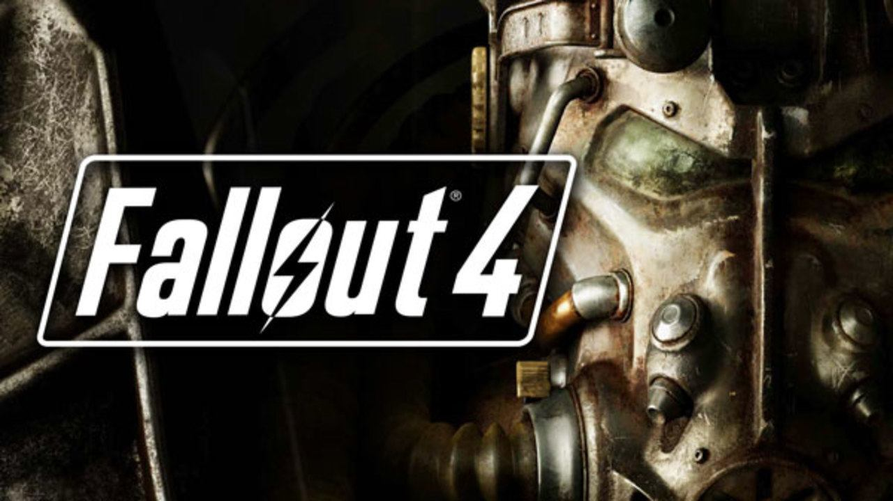

● Jocurile role-play (RPG)
Un joc de rol (prescurtat RPG) este un joc în care jucătorii își asumă rolurile personajelor într-un cadru fictiv. Jucătorii își asumă responsabilitatea pentru interpretarea acestor roluri în cadrul unei narațiuni, fie prin acțiune literală, fie printr-un proces de luare a deciziilor structurate cu privire la dezvoltarea personajului. Acțiunile întreprinse în cadrul multor jocuri reușesc sau eșuează conform unui sistem formal de reguli și linii directoare.
Există, de asemenea, mai multe varietăți de RPG-uri în media electronică, cum ar fi Temnile Multi-User (MUD) bazate pe text multiplayer și succesorii lor bazați pe grafică, jocurile de rol online masiv multiplayer (MMORPG-uri). Jocurile de rol includ, de asemenea, jocuri video de rol pentru un singur jucător, în care jucătorii controlează un personaj sau o echipă de personaje care întreprind misiuni și pot include capabilități ale jucătorilor care avansează folosind mecanica statistică. Aceste jocuri electronice uneori împărtășesc setări și reguli cu jocurile de rol de masă, dar accentuează mai mult progresul personajului decât povestea colaborativă.
Scopul jocurilor RPG
Atât autorii, cât și editorii majori de jocuri de rol de masă le consideră a fi o formă de povestire interactivă și colaborativă. Evenimentele, personajele și structura narativă dau un sentiment de experiență narativă, iar jocul nu trebuie să aibă o poveste puternic definită. Interactivitatea este diferența crucială dintre jocurile de rol și ficțiunea tradițională. În timp ce un spectator al unei emisiuni de televiziune este un observator pasiv, un jucător dintr-un joc de rol face alegeri care afectează povestea. Astfel de jocuri de rol extind o tradiție mai veche a jocurilor de povestire în care o mică grupă de prieteni colaborează pentru a crea o poveste.
În timp ce forme simple de joc de rol există în jocurile tradiționale pentru copii de a crede, jocurile de rol adaugă un nivel de sofisticare și persistență acestei idei de bază, cu adăugiri precum facilitatorii de joc și regulile de interacțiune. Participanții la un joc de rol vor genera personaje specifice și un complot continuu. Un sistem consistent de reguli și o campanie mai mult sau mai puțin realistă în jocuri ajută la suspendarea neîncrederii. Nivelul de realism al jocurilor variază de la suficientă consistență internă pentru a crea o poveste credibilă sau o provocare credibilă până la simulări complete ale proceselor din lumea reală.
Jocurile de rol de masă pot fi, de asemenea, utilizate în mediile de terapie pentru a ajuta indivizii să dezvolte abilități comportamentale, sociale și chiar lingvistice. Beneficiarii includ de obicei tineri cu dificultăți de învățare, cum ar fi tulburările din spectrul autist, tulburarea hiperactivă cu deficit de atenție (ADHD) și dislexia.
Tipurile de jocuri role-play:
Tabletop RPG-urile pe masă și pe hârtie (PnP) sunt conduse prin discuții într-o mică întâlnire socială. GM (Game Master) descrie lumea jocului și locuitorii săi. Ceilalți jucători descriu acțiunile intenționate ale personajelor lor, iar GM descrie rezultatele. Unele rezultate sunt determinate de sistemul de joc, iar altele sunt alese de GM. |
Live action Un LARP este jucat mai mult ca un teatru de improvizație. Participanții joacă acțiunile personajelor lor în loc să le descrie, iar mediul real este folosit pentru a reprezenta decorul imaginar al lumii jocului. Jucătorii sunt adesea costumați ca personajele lor și folosesc recuzită adecvată, iar locul poate fi decorat astfel încât să semene cu decorul fictiv. Unele jocuri de rol live-action folosesc foarfece de hârtie sau compararea atributelor pentru a rezolva conflictele în mod simbolic, în timp ce alte LARP-uri folosesc luptă fizică cu arme simulate, cum ar fi pistoalele airsoft sau armele cu spumă. |
Single-player Jocurile de rol de masă au fost traduse într-o varietate de formate electronice. Încă din 1974, în același an cu lansarea Dungeons & Dragons, versiuni fără licență ale acestuia au fost dezvoltate pe sisteme universitare mainframe sub titluri precum dnd și Dungeon. Aceste RPG-uri timpurii pe computer au influențat toate jocurile electronice, precum și au generat genul jocurilor video de rol. Unii autori împart jocurile digitale de rol în două grupuri împletite: jocuri cu un singur jucător care folosesc mecanisme în stil RPG și jocuri multiplayer care încorporează interacțiunea socială. |
Multiplayer Jocurile de rol online bazate pe text implică mulți jucători care folosesc un anumit tip de interfață bazată pe text și o conexiune la internet pentru a juca un RPG. Jocurile în timp real includ MUD-uri, MUSH-uri și alte soiuri de MU*. Jocurile jucate pe rând includ jocuri play-by-mail și joc play-by-post. |
Cele mai mari jocuri RPG:
 |
|  |  |